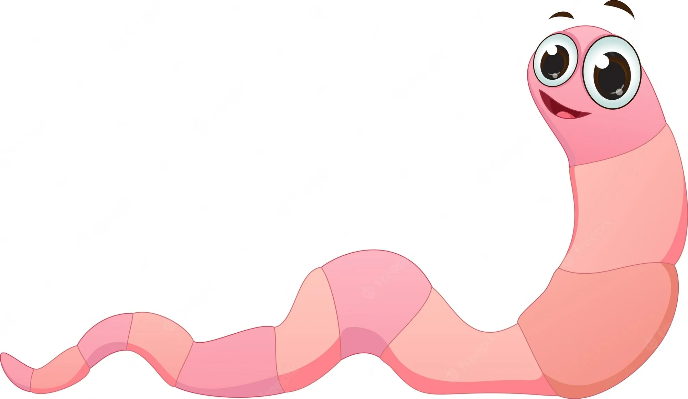

Characters
 Grass
Grass
Vegetation consisting of typically short plants , growing wild or cultivated on lawns and pasture, and
as a fodder crop.
 Grass Eater
Worms eat basically anything that is an organic material which is in the process of decomposing. This
includes as well grass and other garden waste.
 Stone
Stone
A stone is a small piece of rock.
 Geant
Geant
A giant was a very large humanoid magical being which could potentially grow to approximately twenty-five
feet tall, but other than their height, they greatly resembled humans.
 Fox
Fox
Foxes are small to medium-sized, omnivorous mammals belonging to several genera of the family Canidae.